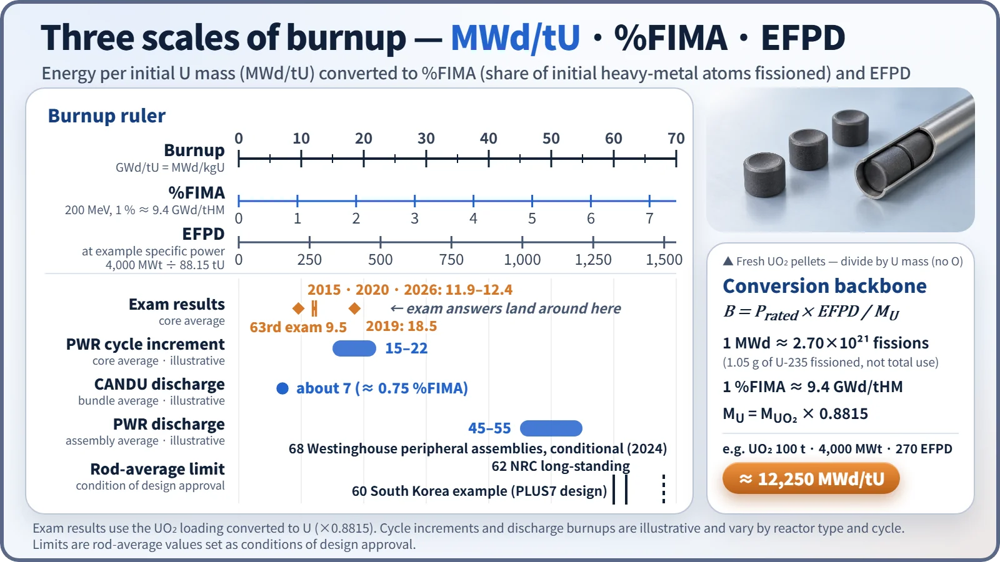
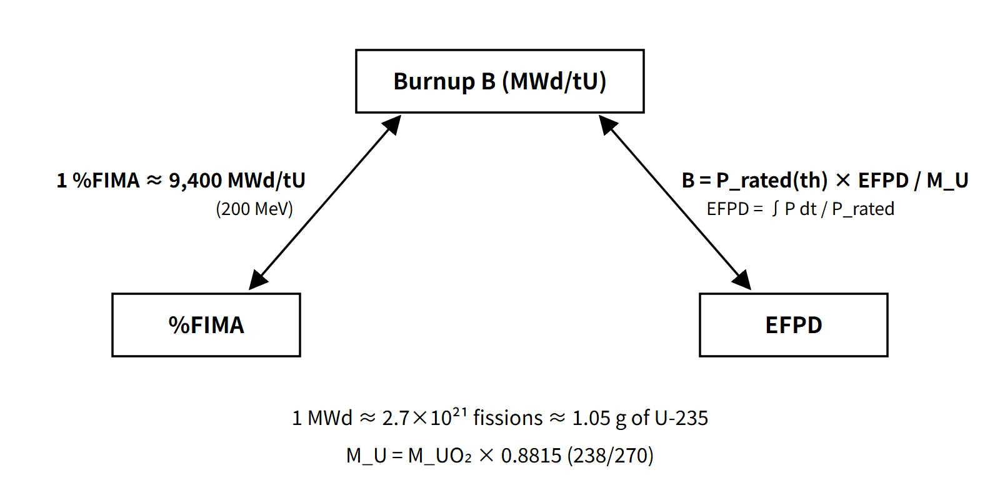

Fuel & Materials · C-FM-001
Burnup (MWd/tU · %FIMA · EFPD) — Definitions and Unit Conversions
Energy released per tonne of initial heavy metal, converted to fissions (%FIMA) and full-power days (EFPD), with worked calculations.
Burnup is the cumulative thermal energy a fuel has released since loading, divided by the initial loaded heavy-metal mass (U, or U+Pu for MOX). It is expressed in MWd/tU (= MWD/MTU), in %FIMA when counted in fissions, and in EFPD when counted in operating time.
Principle and mechanism
Three ways to express it
| Expression | Definition | Typical use |
|---|---|---|
| MWd/tU (GWd/tHM) | Energy released ÷ initial heavy-metal mass | Design and licensing limits, discharge burnup |
| %FIMA | Fissions per 100 initial heavy-metal atoms | Fuel performance, fast reactors, research reactors |
| EFPD | ∫P(t)dt ÷ Prated (days) | Cycle length, operations management, reactivity change rate |
- The denominator is the initial loaded heavy-metal mass (metal only). It is not the UO₂ mass, and it is not corrected for the mass consumed during irradiation.
- 1 GWd/tU = 1 MWd/kgU = 1,000 MWd/tU.
- The quantities are linked by B = Prated × EFPD / MU, with EFPD = capacity factor × calendar days (when the capacity factor is read as the energy ratio relative to rated power).
The backbone of every conversion: how many fissions is 1 MWd?
- 1 MWd = 8.64×10¹⁰ J, and the recoverable energy per fission is about 200 MeV = 3.204×10⁻¹¹ J, so 1 MWd ≈ 2.70×10²¹ fissions.
- If all fissions occur in U-235, about 1.05 g of U-235 fissions per MWd; including capture (α ≈ 0.169), total U-235 consumption is about 1.23 g.
- One tonne of heavy metal contains 10⁶/238 × NA ≈ 2.53×10²⁷ atoms, so 1 %FIMA = 2.53×10²⁵ fissions = about 9,400 MWd, giving 1 %FIMA ≈ 9.4 GWd/tHM (200 MeV assumed; 9.6 at 205 MeV). Scaled to 100 %FIMA this is about 940–960 GWd/tHM, commonly remembered as "about 950 MWd/kgU".
- If a specific energy per fission is stated (for example 200 MeV, or a conversion factor of 3.1×10¹⁰ fissions/W·s ≈ 201 MeV), use that value.

Worked examples
Example 1: burnup from thermal power, capacity factor and loading. 100 t of 3 % enriched UO₂, 4,000 MWt, 90 % capacity factor, 300 days.
- U mass fraction = MU/MUO₂ = 237.96/269.96 = 0.8815 → 88.15 tU
- Energy released = 4,000 × 0.9 × 300 = 1.08×10⁶ MWd (= 270 EFPD)
- B = 1.08×10⁶ / 88.15 ≈ 12,250 MWd/tU (dividing by the UO₂ mass gives 10,800, about 12 % too low)
Example 2: %FIMA conversion. 20 wt% metallic U, 200 MeV.
- M = 1/(0.2/235 + 0.8/238) = 237.44 → 2.537×10²⁷ atoms per tU
- 1 %FIMA = 2.537×10²⁵ × 200 × 1.602×10⁻¹³ J ÷ 8.64×10¹⁰ = about 9,410 MWd/tU
- 1 atomic % (1 % of the initial U-235 atoms fissioned) = 0.2×10⁶/235 × NA × 0.01 = 5.13×10²⁴ fissions → about 1,900 MWd/tU
Example 3: EFPD and reactivity change rate. Design burnup 82,380 MWD/MTU, 85 tU, 2,875 MWt, keff 1.206 → 1.005.
- EFPD = 82,380 × 85 / 2,875 = about 2,436 EFPD
- ρ = (k−1)/k: 17,081 pcm → 498 pcm, Δρ = 16,584 pcm → about 6.8 pcm/EFPD
How the core changes with burnup: Pu contribution and βeff
As burnup proceeds, neutron capture in U-238 builds up Pu-239, which takes over part of the fission load. For an illustrative discharge composition ( U-235 0.97 %, Pu-239 1.0 %; σf 582.2 and 742.5 b; 192.9 and 198.5 MeV per fission), the fission-rate ratio Pu/U = (1.0×742.5)/(0.97×582.2) = 1.315, and on an energy basis the Pu contribution ≈ 57 % (instantaneous value at end of life).
This shift carries through to operating behavior:
- β(Pu-239) ≈ 0.0021 is smaller than that of U-235 (0.0065), so βeff decreases toward the end of the cycle and the kinetics become faster.
- Depletion of fissile material and accumulation of fission products reduce the excess reactivity, which is compensated by lowering the boron concentration.
- Energy per fission is a few percent higher for Pu, so at the same power the fission rate drops slightly.
What it means in a plant
Design and operation
- Cycle design: the cycle burnup increment of an 18-month PWR cycle is roughly 15–22 GWd/tU (illustrative); the loading pattern is tuned to meet both the discharge burnup and the power-peaking targets.
- Levels of burnup: core average < assembly average < rod average < local pellet value. When comparing with a limit, first check which basis the limit uses.
- Economics: the higher the discharge burnup, the less spent fuel per unit of energy. CANDU (natural U) reaches about 7 GWd/tU (about 0.75 %FIMA, illustrative); PWR assemblies reach roughly 45–55 GWd/tU (illustrative).
Safety: what changes as burnup rises
- Fission gas release (FGR) and rod internal pressure increase; a rim structure forms at the pellet periphery; cladding corrosion and hydrogen pickup increase.
- The PCMI failure threshold in a reactivity-initiated accident (RIA) drops; in a LOCA, fuel fragmentation, relocation and dispersal become concerns.
- Spent-fuel decay heat and source term increase; conversely, storage criticality analyses can take burnup credit.
Regulatory and design criteria
Burnup limits come from fuel design approval rather than from statute. The criteria below are examples from the United States (US NRC).
| Basis | Key point |
|---|---|
| Fuel design licensing (topical reports, FSAR Section 4.2) | Burnup limits are set as conditions of design approval, not as numbers in statute |
| US NRC Standard Review Plan (SRP) 4.2 | Burnup-dependent design criteria (internal pressure, deformation, oxidation, FGR) |
| US NRC rod average 62 GWd/MTU | Long-standing limit; in 2024 the first conditional approval of a Westinghouse 68 GWd/MTU rod average for peripheral assemblies |
| RG 1.183 Rev. 1 (2023) | Extends non-LOCA release fractions to a rod average of 68 GWd/MTU and enrichment up to 8 wt% |
| RG 1.236 (2020) | Defines the RIA cladding PCMI limit as a function of hydrogen content (burnup-related) |
The trend toward high burnup and higher enrichment (LEU+) therefore goes together with burnup-dependent accident criteria (RG 1.236, RG 1.183 Rev. 1), not only with a higher burnup number.
Easily confused pairs
| Burnup (MWd/tU) | %FIMA | Atomic % (fissile depletion) | EFPD | |
|---|---|---|---|---|
| Reference quantity | Initial heavy-metal mass | Initial heavy-metal atoms | Initial fissile atoms | Rated power |
| One unit equals | — | ≈ 9.4 GWd/tHM | ≈ 1.9 GWd/tU at 20 % enrichment | ≈ 45 MWd/tU for 4,000 MWt and 88 tU |
| Common mistake | Dividing by UO₂ mass | Confusing it with atomic % | Using total U as the denominator | Using calendar days as is |
Key points at a glance
- Definition: cumulative thermal energy released since loading ÷ initial heavy-metal mass; unit MWd/tU (= GWd/tHM × 10³).
- Equations: B = Prated × EFPD / MU; EFPD = ∫P dt / Prated = capacity factor × operating days.
- Conversions: 1 MWd ≈ 2.7×10²¹ fissions ≈ 1.05 g of U-235 fissioned; 1 %FIMA ≈ 9.4–9.6 GWd/tHM (100 %FIMA ≈ 950 MWd/kgU).
- Mass: UO₂ → U factor 0.8815 (238/270); the denominator is the initial metallic U, so first check whether a loading is given as U or as UO₂.
- Levels: core < assembly < rod < local pellet burnup.
- Core effects: Pu build-up (end-of-life Pu contribution around 50 %) → lower βeff, lower excess reactivity and boron.
- Fuel effects: FGR and internal pressure, rim structure, corrosion and hydriding, tighter RIA and LOCA criteria.
- Limits: conditions of design approval; for example, the US NRC rod average of 62 GWd/MTU, extended to 68 GWd/MTU (conditional).
